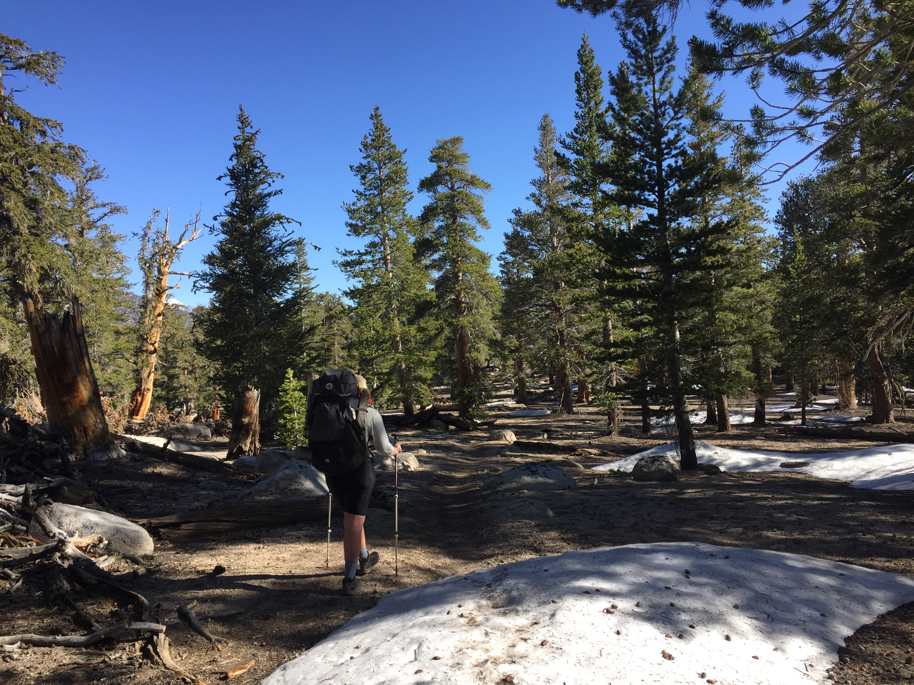
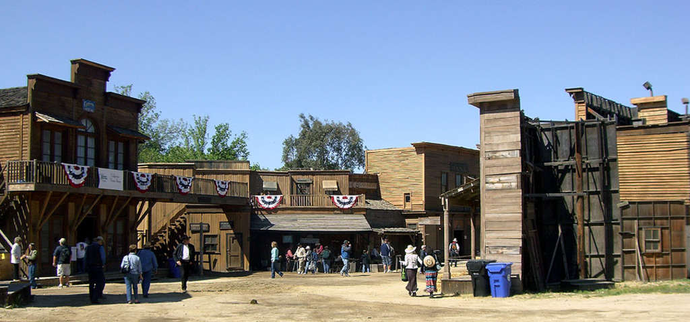
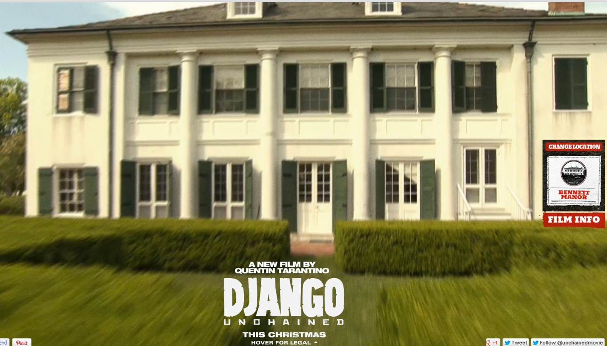
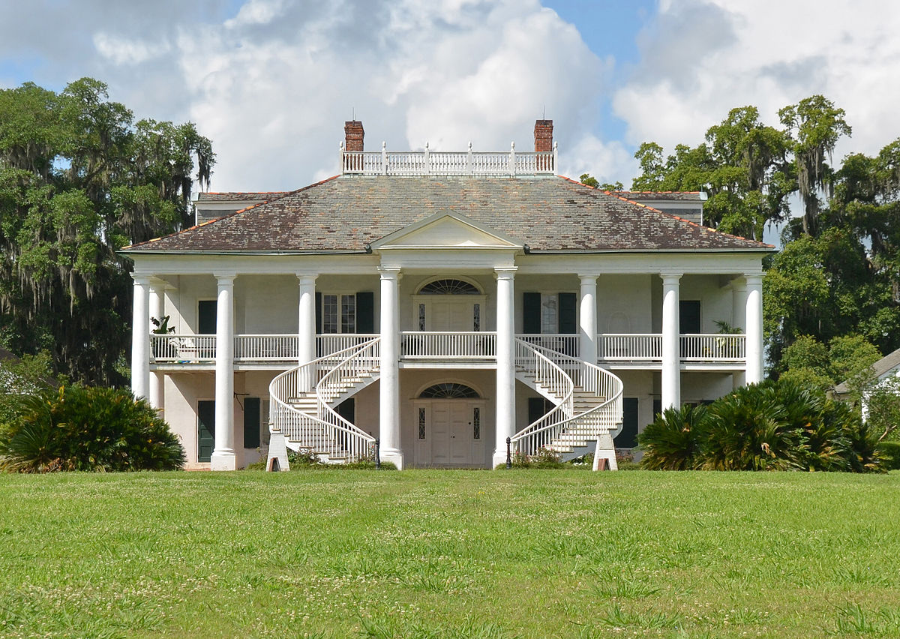

Most Viewed
Django Unchained

Synopsis:
Two years before the Civil War, Django (Jamie Foxx), a slave, finds himself accompanying an unorthodox German bounty hunter named Dr. King Schultz (Christoph Waltz) on a mission to capture the vicious Brittle brothers. Their mission successful, Schultz frees Django, and together they hunt the South's most-wanted criminals. Their travels take them to the infamous plantation of shady Calvin Candie (Leonardo DiCaprio), where Django's long-lost wife (Kerry Washington) is still a slave.The locations for Django Unchained, Quentin Tarantino’s gleefully provocative blending of ugly history and Spaghetti homage range over three states – though not Texas, where the opening scenes appear to be set.
The introduction of slaves being led through a rocky wilderness uses the irresistibly photogenic formations of the Alabama Hills at Lone Pine in Central California.
 Lone Pine, CaliforniaLone Pine is a tiny town on I-395, between Ridgecrest and Bishop. From its Main Street, take the Whitney Portal Road west. When you get to Movie Road, you know you’ve found the right area.
Overlooked by the jagged, snow-capped Sierra Nevada range, capped by Mount Whitney – the highest point in the USA outside Alaska – the Alabama Hills have been the backdrop to hundreds of films, including Iron Man, Bad Day At Black Rock, King Of The Khyber Rifles and High Sierra.
There’s an annual Lone Pine Film Festival in October, celebrating the area’s cinematic history.
Forget the ‘Somewhere in Texas’ subtitle. The first meeting of Django (Jamie Foxx) and Dr Schultz (Christoph Waltz) was filmed in the woods of Independence, on I-395 about 15 miles north of Lone Pine.
The town of ‘Daughtrey, Texas’, where the pair “start trouble” – by riding down the Main Street – is the Melody Ranch, 24715 Oak Creek, Newhall near Santa Clarita, a few miles north of Los Angeles.
 Melody RanchOpened by Monogram Pictures in 1915, the ranch was used as the setting for countless Westerns, including most of John Wayne’s Lone Star Monogram titles, as well as early Republic Pictures, such as Tumbling Tumbleweeds, with Singing Cowboy Gene Autry. In 1952, Autry went on to buy the studio. Television programs filmed at Melody Ranch include favourites Hopalong Cassidy, Wild Bill Hickok, Wyatt Earp, Cisco Kid, and the classic, Gunsmoke.
Although the lot was virtually destroyed by a catastrophic fire in 1962, it’s since been painstakingly rebuilt. Did you recognise the main street as Deadwood, from the TV series? The really great news is that you can visit the studio, and its museum of film and TV memorabilia, on a VIP Tour.
The gathering of Pythonesque racist bag-heads, as they plan to raid Schultz’s wagon, was filmed at another famous ranch, the Big Sky Movie Ranch, 4927 Bennett Road in Simi Valley, a little closer to Los Angeles.
The wintery journey of Django and Schultz was scheduled to be filmed in the peaks around Mammoth, California but, as seems inevitable for any movie production relying on weather, there wasn’t enough snow.
The sets were disassembled and shipped north to Jackson Hole in Wyoming, near the Idaho border, with the Grand Tetons providing a dependably wintery alternative to the High Sierras. The scenes were shot in Grand Teton National Park, around Antelope Flats and the Kelly area, including Kelly Warm Springs, in which Django dreams of his wife Broomhilda (Kerry Washington) as he bathes. The elk herds were filmed at their northern feeding grounds next to the National Elk Refuge.
The Refuge, established way back in 1912 to provide and preserve the winter habitat for the Jackson Elk Herd, is six miles wide at its widest point and ten miles long. Each winter, it's home to around 7,500 elk, one of the largest herds in the world.
It’s off to Louisiana for most of the rest of the film. ‘Bennett Manor’, the elegant home of slave master Big Daddy (Don Johnson), where Django and Schultz attempt to ingratiate themselves in order to get to the sadistic Brittle brothers, is supposedly ‘Gatlinburg’, which is in the mountains of eastern Tennessee.
 Bennett ManorIn fact, the house is at the Evergreen Plantation, 4677 Hwy 18, in Edgard, on the west bank of the Mississippi River, between New Orleans and Baton Rouge. The plantation is a working sugar cane plantation, so there is no cotton. Fava bean plants were grown and individually dressed with heads of cotton.
With no fewer than 37 of its buildings listed on the National Register of Historic Places, Evergreen is the most intact plantation complex in the South – and the film’s scenes of slavery were filmed at the plantation’s existing slave quarters.
 Evergreen Plantnion - Wallace, LousianaThe ‘Candyland’ home of monstrous Calvin Candie (Leonardo Di Caprio), as you might guess from the way it’s used, was specially built for the movie. The exterior was erected overlooking the sugar cane fields at Evergreen. The interior was constructed on a stage at Second Line Stages studio in New Orleans.